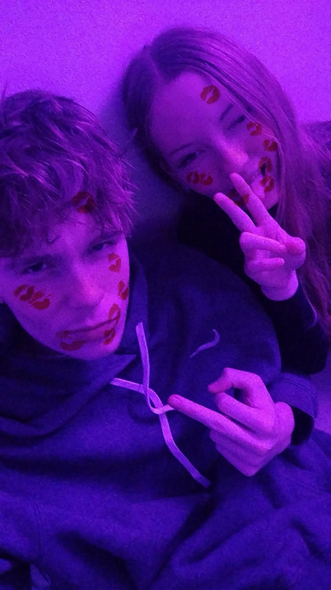
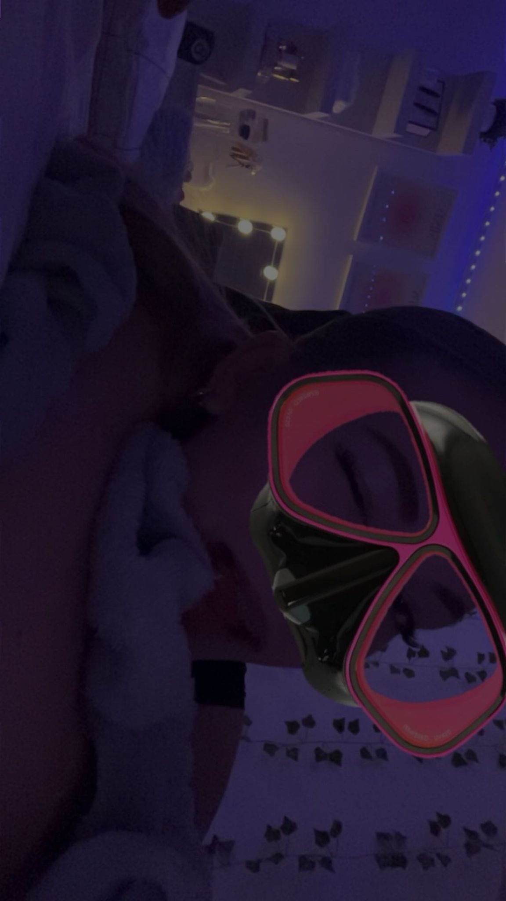
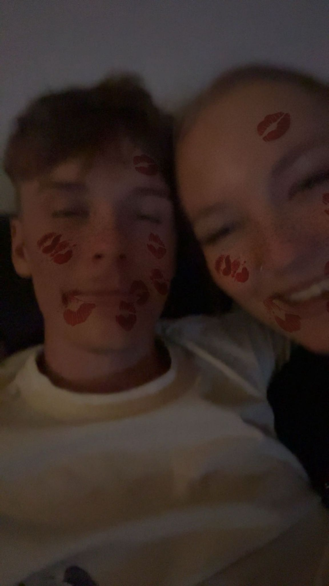
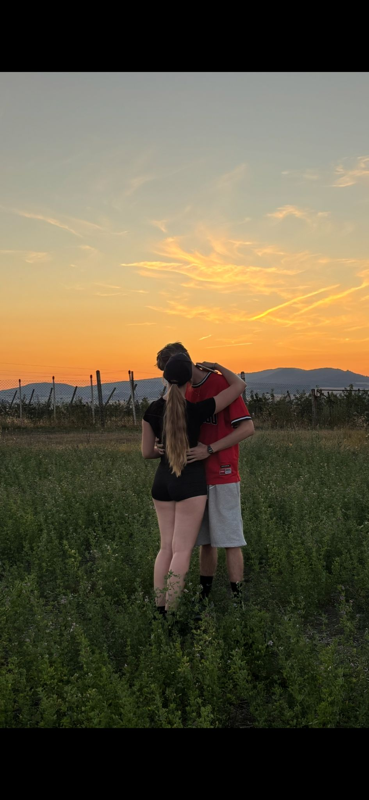
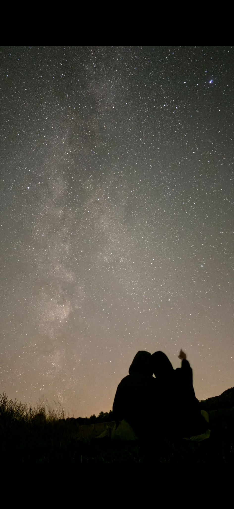
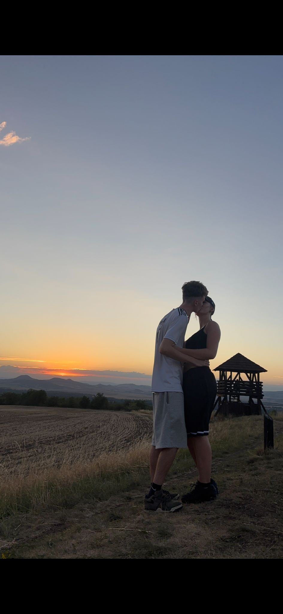
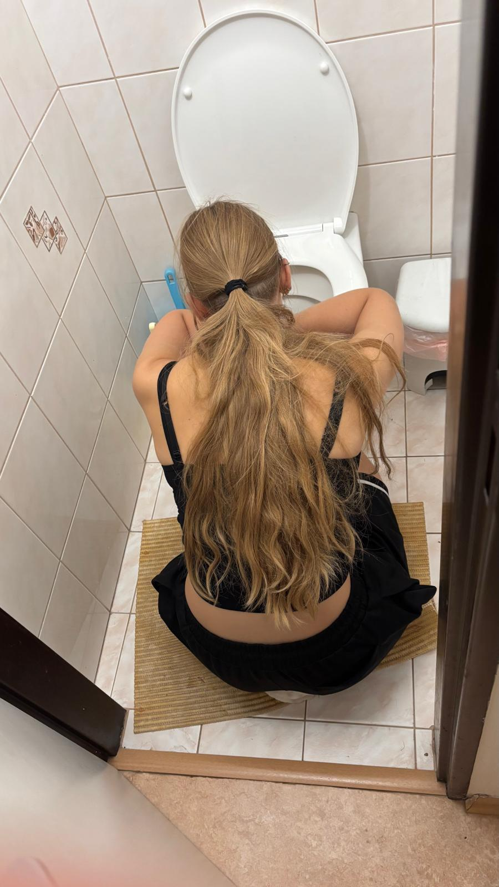
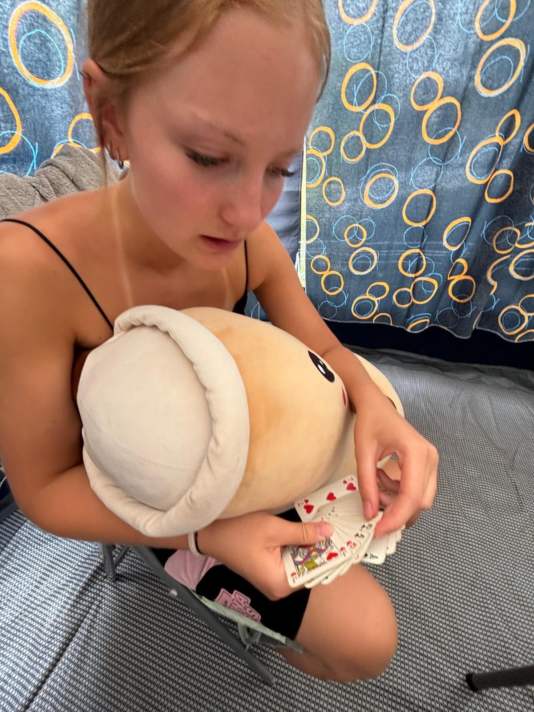

Takže můj bobiku❤️
Dneska máš svoje 17. narozeniny a já bych ti chtěl popřát hlavně to nejdůležitější – aby si byla šťastná, spokojená a aby ses pořád smála tak, jak se směješ. ❤️ Přeju ti, aby se ti splnilo všechno, co si přeješ, aby tě v životě potkávalo co nejvíc krásných věcí a co nejmíň těch špatných. A hlavně abys měla semnou pevné nervy.💋
Je trochu škoda, že zrovna tento týden nejsi tady se mnou, ale i když jsi teď v Rakousku a nemůžu ti popřát osobně, chci, abys věděla, že na tebe dnes myslím ještě víc než normálně. Kdybych mohl, byl bych teď hned vedle tebe, objal tě, dal ti pusu a řekl ti všechno osobně. ❤️
Když se nad tím tak zamyslím, jsem strašně rád, že tě mám. Za tu dobu, co jsme spolu, jsme spolu zažili tolik věcí, na které nechci nikdy zapomenout. Od úplně obyčejných chvil, kdy jsme jen byli spolu, až po všechny naše společné zážitky, smích, blbosti, naše rozhovory, hádky, usmiřování a všechny ty malé momenty, které možná vypadají jako nic, ale pro mě znamenají strašně moc.💓
A právě tyhle chvíle jsou podle mě to nejhezčí. Nemusí se pořád dít něco velkého. Stačí mi být s tebou, koukat na tebe, držet tě za ruku, obejmout tě nebo se s tebou smát úplné kravině. ❤️ Protože právě v těch obyčejných chvílích si vždycky uvědomím, jak moc pro mě znamenáš.
Chci ti taky poděkovat za to, jaká jsi. Za to, že jsi tu pro mě, za všechny chvíle, kdy jsi mě dokázala rozesmát, podržet nebo mi jen zlepšit den tím, že jsi byla se mnou. Možná ti to neříkám pokaždé, když bych měl, ale opravdu si toho vážím.💞
Je až šílené, jak rychle čas utíká. Dneska je ti 17 a já doufám, že spolu zažijeme ještě obrovské množství dalších narozenin, výročí, výletů, večerů, smíchu a všech těch našich malých i velkých momentů. Chci s tebou dál tvořit vzpomínky, ke kterým se jednou budeme vracet a říkat si, jak jsme byli mladí a jak jsme spolu všechno prožívali. ❤️
Takže ti k těm tvým 17. narozeninám přeju úplně všechno nejlepší. Přeju ti zdraví, štěstí, lásku, radost, splněné sny a hlavně spoustu důvodů k úsměvu. A jestli ti můžu přát ještě něco, tak to, abys nikdy nepochybovala o tom, jak moc jsi pro mě důležitá.








Užij si svůj den naplno, protože dneska je to hlavně o tobě. ❤️
Až se vrátíš z Rakouska, čeká tě pořádná pusa, obejmutí a dáreček 🥹❤️